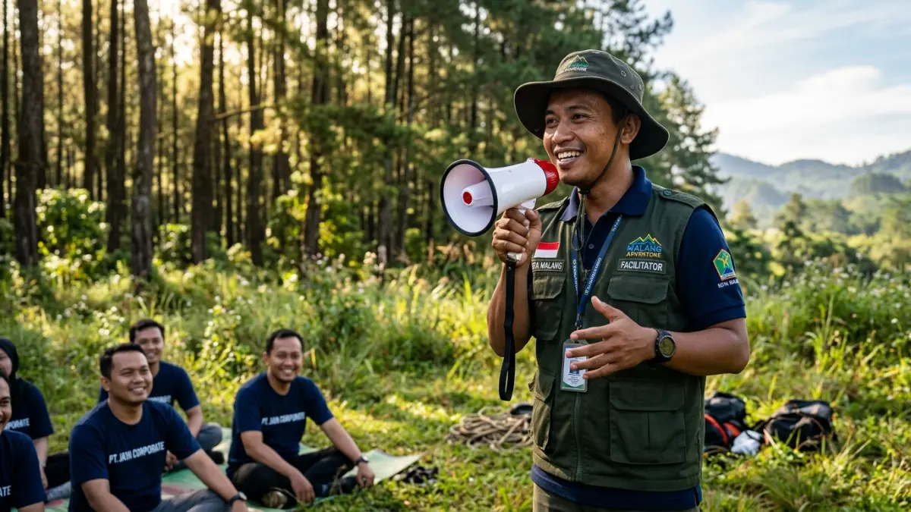

Tempat outbound di Malang perlu dipilih berdasarkan kapasitas lahan, pengalaman fasilitator, dan kesesuaian program dengan tujuan acara, baik untuk kebutuhan sekolah maupun perusahaan.
DAFTAR ISI
1. Apa Kriteria Penting Memilih Tempat Outbound di Malang?
Kriteria penting memilih tempat outbound di Malang meliputi kapasitas lahan sesuai jumlah peserta, kelengkapan fasilitas keamanan, pengalaman fasilitator, dan kemudahan akses lokasi bagi rombongan.
Kapasitas lahan menjadi kriteria dasar karena games kelompok membutuhkan ruang gerak yang cukup agar seluruh peserta dapat terlibat aktif.
Lokasi yang terlalu sempit untuk jumlah peserta besar berisiko membuat sebagian kelompok hanya menjadi penonton, sehingga tujuan pelatihan kerja sama tidak tercapai maksimal.
Fasilitas keamanan juga wajib dicek secara langsung, terutama jika program mencakup wahana tantangan fisik seperti flying fox atau high rope.
Pastikan peralatan seperti harness, tali, dan helm dalam kondisi layak pakai dan diperiksa secara berkala oleh penyedia jasa.
Pengalaman fasilitator turut menentukan kualitas acara, karena fasilitator berperan memandu jalannya games sekaligus menyampaikan nilai pembelajaran di setiap sesi.
Fasilitator yang berpengalaman umumnya mampu membaca dinamika kelompok dan menyesuaikan tingkat kesulitan games secara langsung di lapangan.
Terakhir, akses lokasi perlu dipertimbangkan terutama untuk rombongan yang menggunakan bus pariwisata berukuran besar, mengingat sebagian kawasan outbound berada di jalan pegunungan yang lebih sempit dibanding jalan kota.
2. Bagaimana Kebutuhan Outbound Sekolah Berbeda dari Perusahaan?
Kebutuhan outbound sekolah lebih menekankan pembentukan disiplin dan kepemimpinan siswa, sedangkan kebutuhan outbound perusahaan lebih berfokus pada komunikasi lintas divisi dan penyelesaian masalah kerja.
Sekolah biasanya menggunakan outbound sebagai bagian dari program LDKS atau MOS, sehingga rundown acara sering dipadukan dengan sesi motivasi, kedisiplinan baris berbaris, dan pembentukan karakter kepemimpinan siswa.
Games yang dipilih umumnya bersifat edukatif dan menekankan nilai tanggung jawab kelompok.
Sementara itu, perusahaan cenderung memanfaatkan outbound untuk kebutuhan team building lintas divisi, pelatihan kepemimpinan level supervisor hingga manajer, atau sekadar acara family gathering tahunan.
Program untuk perusahaan biasanya lebih fleksibel dan dapat disesuaikan dengan tema tertentu, misalnya simulasi pengambilan keputusan bisnis dalam bentuk permainan kelompok.
Perbedaan fokus ini membuat penyedia jasa outbound umumnya menawarkan paket terpisah antara segmen pendidikan dan segmen korporat, meski lokasi yang digunakan bisa sama.

Pengalaman fasilitator turut menentukan kualitas acara outbound. (Ilustrasi)3. Apa Saja Jenis Lokasi Outbound yang Umum Ditemukan di Malang?
Jenis lokasi outbound yang umum ditemukan di Malang meliputi area terbuka di dataran rendah Kota Malang, kawasan perbukitan Kabupaten Malang, dan kawasan pegunungan sejuk di Kota Batu.
- Lokasi di Kota Malang, umumnya berupa lapangan luas atau taman kota yang cocok untuk kegiatan setengah hari tanpa camping.
- Lokasi di Kabupaten Malang, biasanya berupa desa wisata atau lahan perkebunan yang menawarkan suasana pedesaan dengan udara lebih sejuk.
- Lokasi di Kota Batu, menjadi favorit karena kontur perbukitan, udara sejuk, dan ketersediaan lahan luas milik operator wisata khusus outbound.
Pemilihan jenis lokasi ini sebaiknya disesuaikan dengan durasi acara dan preferensi suasana yang diinginkan panitia, apakah lebih memilih kepraktisan akses dalam kota atau suasana alam pegunungan yang lebih menyegarkan.
4. Berapa Anggaran yang Perlu Disiapkan untuk Outbound di Malang?
Anggaran outbound di Malang perlu disesuaikan dengan jumlah peserta, durasi kegiatan, dan kelengkapan fasilitas seperti konsumsi, penginapan, dan wahana tantangan fisik.
Secara umum, semakin lengkap fasilitas yang digunakan dan semakin lama durasi acara, semakin tinggi pula anggaran yang dibutuhkan.
Panitia sekolah maupun perusahaan disarankan meminta rincian penawaran tertulis dari beberapa penyedia jasa sekaligus, agar dapat membandingkan komponen biaya secara transparan sebelum menentukan pilihan akhir.
Berdasarkan data resmi BPS Kota Malang, aktivitas kunjungan wisata dan tingkat hunian hotel di wilayah Malang Raya cenderung meningkat pada periode liburan sekolah, yang turut memengaruhi ketersediaan dan harga paket outbound pada musim tersebut.
5. Kesimpulan
Memilih tempat outbound di Malang yang tepat memerlukan kejelian dalam menilai kapasitas lahan, keamanan wahana, pengalaman fasilitator, dan kesesuaian program dengan tujuan acara sekolah atau perusahaan.
Untuk gambaran lokasi spesifik di kawasan pegunungan, simak pembahasan tempat outbound di Batu Malang untuk LDKS, gathering, dan team building, serta pelajari juga ragam games outbound untuk LDKS beserta tujuan setiap permainannya.